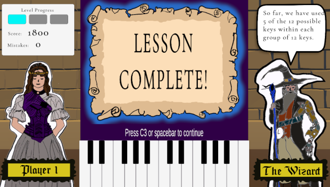

Art 4059 - Senior Capstone: Piano Game
Professor(s):Liz Lessner & Vaidy
Shown is my senior capstone project displaying the different art assets created for the game.
Goal: Create a project that tackles an performance issuse.



Professor(s):Liz Lessner & Vaidy
Shown is my senior capstone project displaying the different art assets created for the game.
Goal: Create a project that tackles an performance issuse.